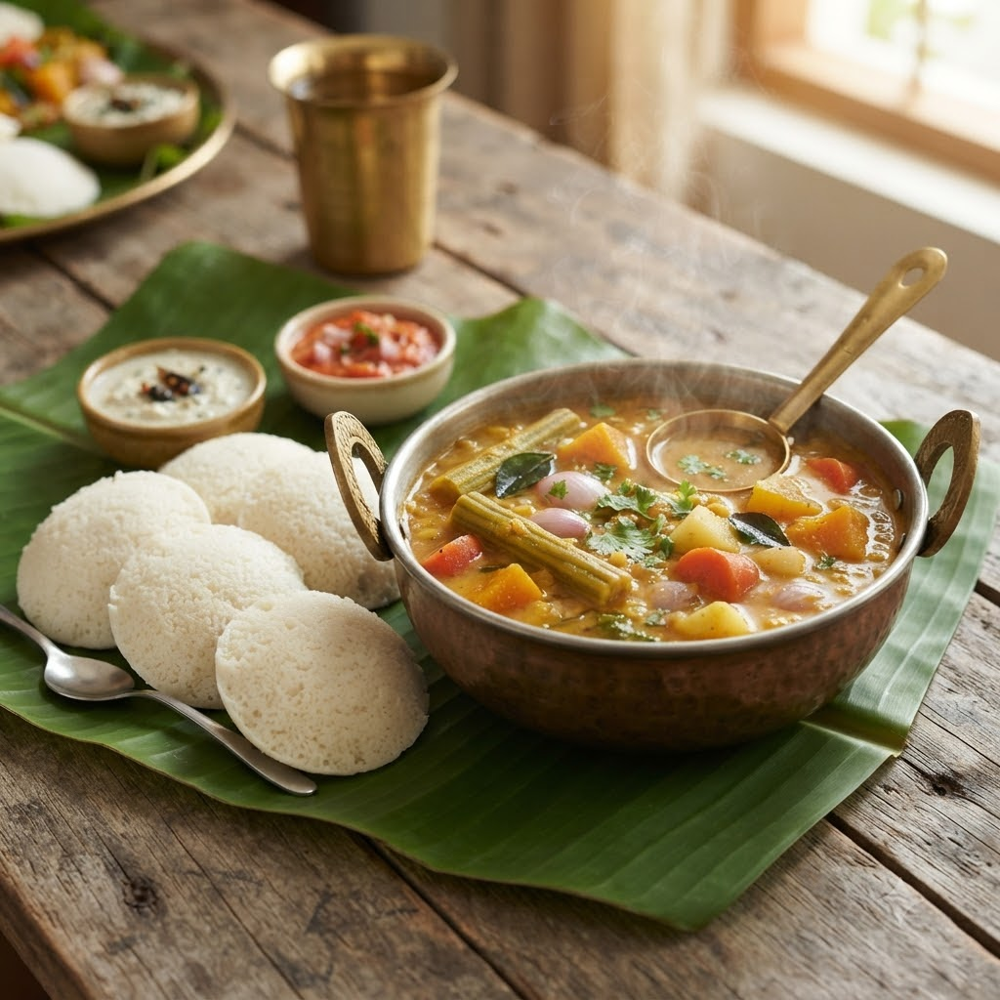

Sambar

Sambar
Chef Magic – Boil + Sauté Auto 28 min — Serves 4
Gluten-Free • Vegan • High-Fibre • Everyday
Ingredients
- 1 cup toor dal, washed
- 1 cup mixed vegetables (drumstick, carrot, pumpkin), chopped
- 2 tbsp sambar powder
- 1 tsp tamarind (imli) paste
- 1/2 tsp turmeric (haldi)
- 1 tsp mustard seeds (rai)
- 9 curry leaves (kadi patta)
- 1 dried red chilli (lal mirch)
- 1 tbsp oil
- 3 cups water
- Salt to taste
Method
1Add dal, vegetables, turmeric and water to the jar; select Boil (Speed 1–2, 100°C) and cook until dal and vegetables are fully soft.
2Stir in sambar powder, tamarind paste and salt; select Boil (Speed 1–2, 100°C) again for 5 minutes to blend the flavours.
3Temper mustard seeds, curry leaves and dried red chilli in oil, then stir into the sambar.